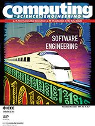

Special Issue of Computing in Science and Engineering
A special issue of Computing in Science & Engineering that Andy Lumsdaine and I edited, devoted to software engineering in computational science, is now available. We'd like to thank everyone who contributed:
- Report on the Second International Workshop on Software Engineering for CSE, by Jeffrey Carver (University of Alabama)
- Managing Chaos: Lessons Learned Developing Software in the Life Sciences, by Sarah Killcoyne and John Boyle (Institute for Systems Biology)
- Scientific Computing's Productivity Gridlock: How Software Engineering Can Help, by Stuart Faulk (University of Oregon), Eugene Loh and Michael L. Van De Vanter (Sun Microsystems), Susan Squires (Tactics), and Lawrence G. Votta, (Brincos)
- Mutation Sensitivity Testing, by Daniel Hook (Engineering Seismology Group Solutions) and Diane Kelly (Royal Military College of Canada)
- Automated Software Testing for MATLAB, by Steve Eddins (The MathWorks)
- The libflame Library for Dense Matrix Computations, by Field G. Van Zee, Ernie Chan, and Robert A. van de Geijn (University of Texas at Austin), and Enrique S. Quintana-Ortí and Gregorio Quintana-Ortí (Universidad Jaime I de Castellón)
- Engineering the Software for Understanding Climate Change, by Steve Easterbrook (University of Toronto) and Timothy Johns (Hadley Centre for Climate Prediction and Research)
